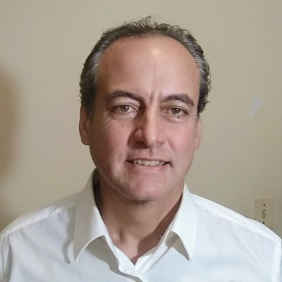

About — Héctor Corbellini
La persona detrás de Teledígitos, su enfoque técnico, conocimientos y forma de trabajar.
Identidad: El Diseñador de Software
Me llamo Héctor Corbellini. Mi enfoque no es el de un desarrollador convencional. Con una trayectoria construida desde el rigor técnico y el criterio autodidacta, me defino como un Diseñador de Software. Mi labor no es seguir modas ni adoptar librerías por inercia; mi objetivo es la soberanía tecnológica.
Trayectoria: en lugar de apoyarme solo en credenciales formales, pongo el foco en la evolución de mi criterio: desde mis bases en la Facultad de Ingeniería en Uruguay hasta mi desarrollo posterior como arquitecto autodidacta, priorizando la profundidad técnica y la soberanía tecnológica sobre la adopción ciega de modas. Esto busca comunicar experiencia real, no antigüedad por sí misma: haber visto nacer y morir lenguajes y arquitecturas ayuda a distinguir qué funciona de lo que es una moda pasajera.

Héctor Corbellini
Diseñador de Software — Teledígitos
Conocimientos y Enfoque
- Profundidad técnica: Priorizar el conocimiento profundo de la máquina (Linux, rendimiento, seguridad) sobre las interfaces superficiales.
- Control local: Diseñar sistemas que permitan a las organizaciones recuperar el control de sus datos, alejándolos de la dependencia de servicios cloud masivos que limitan la autonomía.
- Determinismo: Construir soluciones donde el comportamiento sea predecible, testeable y robusto, evitando la improvisación que caracteriza a la mayoría de las implementaciones de IA actuales.
- Sistemas y Código (Arquitectura Hexagonal): Implemento arquitecturas desacopladas, utilizando Rust, Java y Python para garantizar un rendimiento crítico y una deuda técnica mínima. Mi foco está en la lógica pura y en la integridad del sistema ante el escalado.
- Sistemas Visuales (Comunicación Sobria): Entiendo el diseño como una extensión del código. La maquetación y la identidad visual deben ser funcionales, despejadas y coherentes con la estructura técnica del backend.
- Desarrollo Audiovisual Automatizado: Utilizo mi capacidad de automatización para crear entornos sonoros y visuales que sirven como herramientas de soporte y comunicación operativa, eliminando la fricción entre datos complejos y percepción humana.
Política de Engagement (Ética de Trabajo)
- Sin humo: No vendo horas de "picado de código". Vendo soluciones arquitectónicas que previenen la deuda técnica.
- Claridad en el pago: Todo desarrollo o consultoría personalizada requiere presupuesto previo. La ayuda gratuita se limita exclusivamente a mis contribuciones en repositorios públicos y foros técnicos. Si la consulta es sobre un proyecto open source en el que colaboro, la vía es el repositorio público.
- Criterio de selección: Prefiero proyectos donde la arquitectura técnica sea prioridad, y soy honesto cuando una solución rápida va a comprometer la integridad del sistema, aunque eso implique no tomar el trabajo.
"Trabajo con estándares de código limpio, diseño funcional y entregas rigurosas, y actualmente sumo colaboradores por proyecto puntual. Si te interesa, te puedo tener en cuenta para la próxima integración que requiera ese perfil, y vemos cómo funciona la dinámica."
Propósito: Soberanía y Vida Saludable
Teledígitos no busca acumular capital urbano por sí mismo, sino financiar un modelo de vida más soberano y saludable. Parte de esto es aplicar mi lógica de ingeniero a proyectos vinculados a la ecología y a organizaciones que buscan más autonomía frente a las cadenas de distribución convencionales.
Modelo de vida: el "Nómada de Base"
- Sustento urbano, aplicación flexible: clientes remotos (locales o del exterior) financian la operación de base.
- Estancias de trabajo en otros entornos: períodos fuera de la ciudad, en contacto con la naturaleza, vividos como trabajo remoto normal y no como una fuga romántica — sin dejar de cumplir con los compromisos técnicos asumidos.
En resumen, busco que el buen trabajo técnico sirva para vivir con más tranquilidad y equilibrio, sin perder profesionalidad ni rentabilidad.